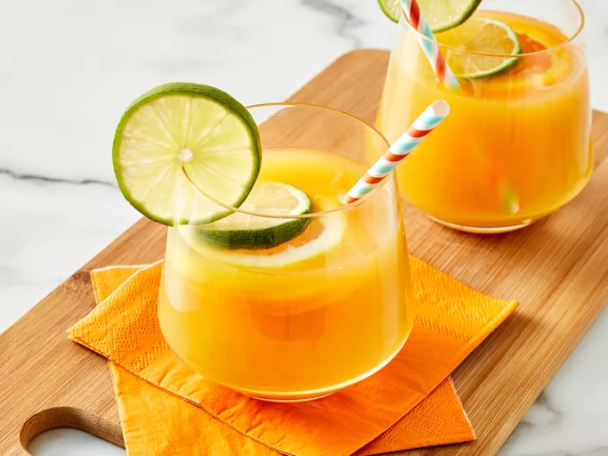

Jamaican Rum Punch

Description
Looking for a delicious, tropical cocktail to sip poolside this summer? Then you need to try this Jamaican rum punch! You'll love the triple rum flavor paired with the fruity juices and grenadine — and so will everyone who tries it.
Ingredients
- 2 ½ cups pineapple juice
- 2 ½ cups orange juice
- 1 cup 151 proof rum (such as Bacardi®)
- ½ cup dark rum (such as Meyer's®)
- ¼ cup coconut-flavored rum (such as Malibu®)
- ¼ cup fresh lime juice
- 3 tablespoons grenadine syrup
- 1 orange, sliced
- 1 lime, sliced
- 1 lemon, sliced
Steps
- Stir pineapple juice, orange juice, 151 proof rum, dark rum, coconut-flavored rum, lime juice, and grenadine syrup together in a punch bowl.
- Float orange slices, lime slices, and lemon slices in the punch.
- Ladle the punch into ice filled glasses, or chill the punch in the refrigerator until ready to serve.